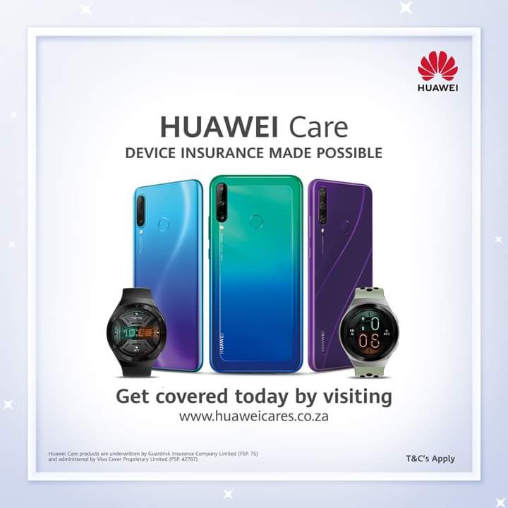
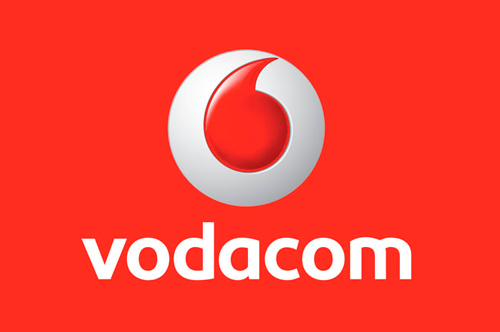

huawei
ABOUT US
Huawei is a renowned electronics and technology brand, offering high-quality cell phones, tablets and other devices. This brand has grown in popularity over the years, due to its affordable Huawei specials and impressive features on their products.
VODACOM SHOP
ABOUT US
Whether you want to buy a new cellphone, just get airtime, or take out a new contract or prepaid package with Vodacom, the Vodacom Shop will be able to help you. It will see to you all your cellular requirements, including mobile broadband (including 3G, HSDPA and iBurst connectivity) and it has a wide range of accessories on offer. The experienced staff will be able to advise you on any queries with regards to voice and data communication products and accessories. Vodacom realises that many of the visitors to the Waterfront shop are on holiday, so there are also short-term rentals available of 3G Datacards, Garmin GPS Units and mobile phones.
MTN SHOP
ABOUT US
MTN offers its customers a diverse range of calling and data services. MTN can adapt your prepaid options monthly and enable you to hold two calls and then take a third. MTN lets its customers enjoy flexible solutions to their specific needs. With simple and affordable MTN Roaming, you can stay connected to your family, friends and business while travelling. SMS, e-mail, surf and talk away with MTN’s connectivity solutions, all designed to be customised to your specific needs. Whether you need more data, longer talk time or faster downloads, MTN will be there to get you connected. The MTN Store is in the Victoria Wharf Shopping Centre.